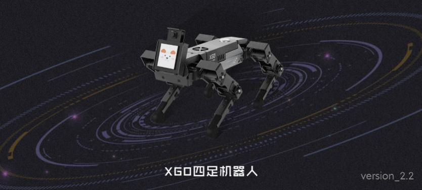
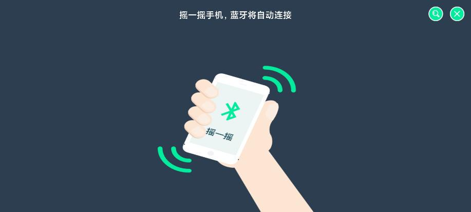
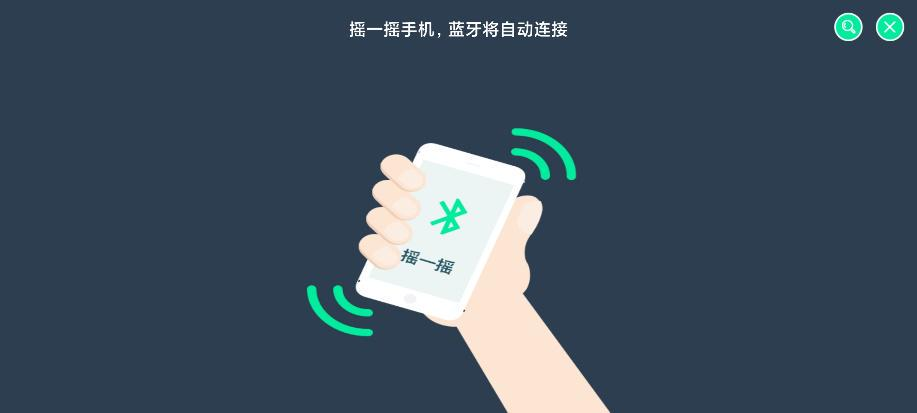
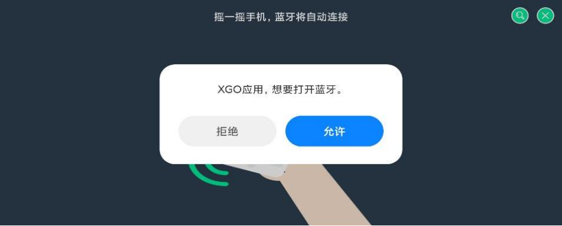

1. summary
This software is a robot controller developed by Luwu Intelligence. The software connects Bluetooth and robot through mobile phones to data communication, providing users with convenient and simple remote control interface and a variety of other control methods, and greatly facilitates users' control of the robot. The software can be used without login, after installed search and match robot equipment and identify the types of robots. The software is generally divided into four parts: Main page, Bluetooth interface, Setup interface and Control interface.The portal to other interfaces is provided on the home interface; interactive function with Bluetooth connection of the robot; the setting interface provides options to change APP settings; and the control interface provides a variety of remote control functions.
2.Detailed module solution
2.1.Home page
Click on the software icon, and enter the APP.  First of all, users will see the welcome interface as the picture above, the interface background picture is the Luwu intelligent mini version of the quadruped robot, but also shows the version number of the current software.The welcome interface lasts for 3 seconds and goes to the home page. The main page provides access to the other interfaces, as shown above, as described below: 1）Bluetooth: If there is no robot device connected at this time, click the Bluetooth button will enter the Bluetooth connection interface, you can search and connect the robot device.  Note: Bluetooth of the mobile phone is needed here. On opening for the first time, the user needs to authorize the corresponding permission of the APP, otherwise the Bluetooth function will not be used normally.When entering the Bluetooth connection interface, if the phone Bluetooth is not open, the user will be prompted to open Bluetooth, otherwise the function will not use Bluetooth normally. The Bluetooth connection interface is shown in the figure below.Shake the phone, and the APP will automatically connect to the nearest robotic device.  If there are multiple devices nearby or users want to connect the device through the robot name, click the search button, after a period of search, all available devices nearby will be listed, as shown in the figure below, click a device name to connect the device. If the robot device has been connected at this time, click the Bluetooth button to pop up the window shown in the figure below, and the user can disconnect the connection.
Note: Bluetooth of the mobile phone is needed here. On opening for the first time, the user needs to authorize the corresponding permission of the APP, otherwise the Bluetooth function will not be used normally.When entering the Bluetooth connection interface, if the phone Bluetooth is not open, the user will be prompted to open Bluetooth, otherwise the function will not use Bluetooth normally. The Bluetooth connection interface is shown in the figure below.Shake the phone, and the APP will automatically connect to the nearest robotic device.  If there are multiple devices nearby or users want to connect the device through the robot name, click the search button, after a period of search, all available devices nearby will be listed, as shown in the figure below, click a device name to connect the device. If the robot device has been connected at this time, click the Bluetooth button to pop up the window shown in the figure below, and the user can disconnect the connection.  2) Calibration: Click the calibration button to enter the calibration interface to reset the initial position of the robot.After reading carefully, click I know, click to enter the calibration mode button, at this time the robot will no longer output torque, external force can rotate, the user needs to put the robot as the specified position (see the secondary development manual), and then click the complete calibration button, the robot will record the current position as the initial position and automatically complete the restart. Note: The calibration button is hidden by default in the main interface. The user can cancel the hidden in the Settings interface. See the Settings section for details.This operation is a professional user operation, the operation is irreversible, please read the instructions carefully after the operation.
2) Calibration: Click the calibration button to enter the calibration interface to reset the initial position of the robot.After reading carefully, click I know, click to enter the calibration mode button, at this time the robot will no longer output torque, external force can rotate, the user needs to put the robot as the specified position (see the secondary development manual), and then click the complete calibration button, the robot will record the current position as the initial position and automatically complete the restart. Note: The calibration button is hidden by default in the main interface. The user can cancel the hidden in the Settings interface. See the Settings section for details.This operation is a professional user operation, the operation is irreversible, please read the instructions carefully after the operation.  3）Settings: Click the Settings button to enter the Settings interface. As shown in the figure below, users can set "whether the APP will automatically close Bluetooth" and the setting language (currently only Chinese and English) Note When running this project as a developer is selected as an option, the calibration button on the main interface is unhidden. About: Click the About button to enter the About interface and see more information about this product. 5）Control interface: Click the performance mode, complete machine control, single-leg control and rudder machine control buttons to enter different control interfaces respectively. Slide and switch different modes from left and right in the main page. You can control the connected robot equipment in real time. Please refer to the next section for details.
3）Settings: Click the Settings button to enter the Settings interface. As shown in the figure below, users can set "whether the APP will automatically close Bluetooth" and the setting language (currently only Chinese and English) Note When running this project as a developer is selected as an option, the calibration button on the main interface is unhidden. About: Click the About button to enter the About interface and see more information about this product. 5）Control interface: Click the performance mode, complete machine control, single-leg control and rudder machine control buttons to enter different control interfaces respectively. Slide and switch different modes from left and right in the main page. You can control the connected robot equipment in real time. Please refer to the next section for details.
2.2.Control interface
The control interface enables the user to directly control the robot in different ways, equivalent to the user having multiple remote controls, respectively described as follows: 
 1）Machine control: complete machine control provides four modes of operation. Ordinary users control the movement and rotation of the robot through the button; advanced users control the movement and rotation of the robot through the rocker; XYZ allows users to control the 3D translation of the robot body through the rocker; PRY allows users to control the three-dimensional rotation of the robot body through the rocker.In addition, you can also control the height of the robot by dragging the lower sliding bar, and change the movement mode, open and close the gyroscope by clicking the upper right corner button.The blue dial displays the current device power, with 0 when the device is not connected; the red dial displays the current speed.The top two graphs give the ordinary and advanced interfaces.
1）Machine control: complete machine control provides four modes of operation. Ordinary users control the movement and rotation of the robot through the button; advanced users control the movement and rotation of the robot through the rocker; XYZ allows users to control the 3D translation of the robot body through the rocker; PRY allows users to control the three-dimensional rotation of the robot body through the rocker.In addition, you can also control the height of the robot by dragging the lower sliding bar, and change the movement mode, open and close the gyroscope by clicking the upper right corner button.The blue dial displays the current device power, with 0 when the device is not connected; the red dial displays the current speed.The top two graphs give the ordinary and advanced interfaces.
 2）Performance mode: the user allows the robot to perform the corresponding actions by clicking each button, click the rotation robot will perform all actions repeatedly, and click the Reset robot will restore the initial state.
2）Performance mode: the user allows the robot to perform the corresponding actions by clicking each button, click the rotation robot will perform all actions repeatedly, and click the Reset robot will restore the initial state.
 3）Single leg control: The interface allows users to directly control a leg of the robot by changing the three-dimensional coordinate system by selecting the leg to control and then dragging the sliding lever.
3）Single leg control: The interface allows users to directly control a leg of the robot by changing the three-dimensional coordinate system by selecting the leg to control and then dragging the sliding lever.
 4）Servo control: the interface allows the user to directly control a certain steering machine of the robot, changing the angle of the corresponding steering machine by selecting the position to control the rudder machine and then dragging the sliding lever.
4）Servo control: the interface allows the user to directly control a certain steering machine of the robot, changing the angle of the corresponding steering machine by selecting the position to control the rudder machine and then dragging the sliding lever.
3.Detailed function solution
Example of controlling the robot forward function using a remote control  1）Enter the APP, and click the Bluetooth button after entering the main page. As shown in the picture above, click to open Bluetooth, enter the Bluetooth connection interface, and shake the phone. The APP will automatically connect to the robot device and jump to the main interface. 2）After the connection is successful, click the control button of the whole machine to enter the remote control interface. Take the ordinary control mode as an example, click the left upward button, you will see the robot moving forward, release the button and the robot to stop the movement. 3）Click the return button in the top left corner to return to the main interface, and click the Bluetooth button to disconnect.Two consecutive return clicks to exit the APP.